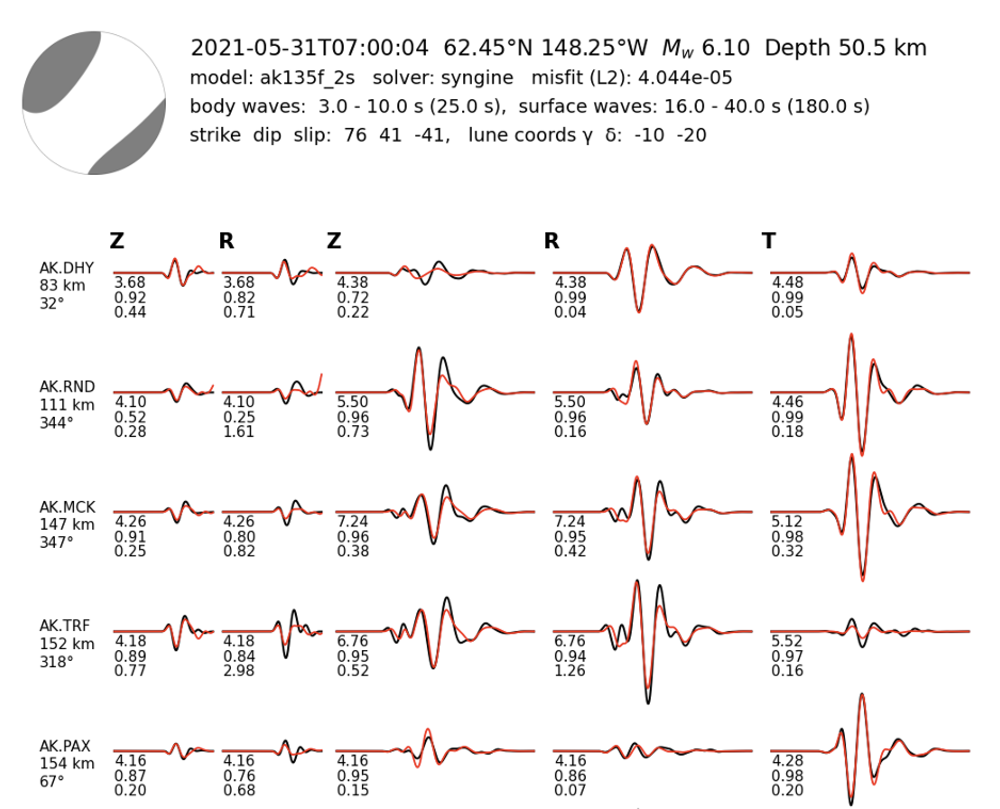

Moment tensor inversion
I am interested the inversion of moment tensor from waveform data. My work in this area is mostly based on the MTUQ package.
My current main contribution to the code is the implementation of a new stochastic optimization method